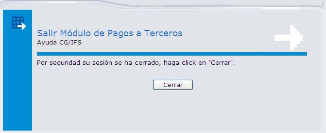

Estructura de un Menú
Aunque el contenido varía en cada caso, todos los Menús de CG/Web tienen una estructura similar. La información se agrupa de la siguiente forma:
Cabecera del Menú:
En la esquina superior de la pantalla se encuentra siempre el nombre de la empresa que desarrolló el sistema (Grupo Business T&G), luego tenemos las iniciales del sistema (CG/IFS WEB), seguido del nombre (SISTEMA FINANCIERO CONTABLE). Al inicio del menú de opciones se encontrará el nombre del módulo actual, en el caso de la Figura 2.6 tenemos Módulo: Contabilidad.
Cuerpo del Menú:
Cada menú comprende una serie de opciones, las cuales al ser seleccionadas pueden llevar a otro menú (en el caso de que el menú correspondiente englobe a otro menú de nivel inferior), en el cual se efectúa un trabajo específico.
Al dar clic sobre una opción de menú, ésta permanece subrayada y de un color más acentuado durante el tiempo que se encuentre ejecutando esa opción.
Pie del Menú:
Al pie de cada menú de opciones encontrará dos vínculos, mismos que se describen a continuación:
- Salir: Sale del sistema presentando el mensaje que muestra la Figura 2.7. Este mensaje también se presenta cuando la sesión ha caducado, debido a un tiempo alto de inactividad.
- Inicio: Presenta la pantalla como cuando ingresa por primera vez al módulo, únicamente con el menú principal.

Figura 2.7. Ventana – Salir Módulo de Pagos a Terceros.
Al presionar el botón CERRAR, se presentará un mensaje para confirmar que realmente desea cerrar la sesión y finalmente se cerrará el sistema.
Created with the Personal Edition of HelpNDoc: Easy to use tool to create HTML Help files and Help web sites